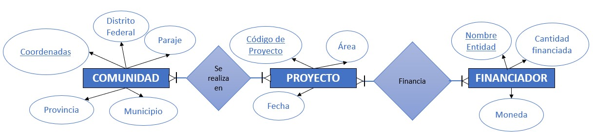
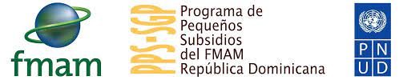

BBDD en cooperación con la ONU
Front-End Dev
Back-End Dev
UX Research
UX/UI Design
BBDD
2022
[001]UX Research
Los usuarios a investigar en este proyecto fueron los integrantes del grupo PPS-DOM, perteneciente a la ONU y la ONG local Guakía Ambiente.
Tras las entrevistas se decidió:
- Necesidades de la BBDD
- Datos obligatorios de cada proyecto
- Cómo conectar los datos a la BBDD
[002]Diagrama ER-Lógico
*Este es un modelo muy simplificado con fines ilustrativos, no se corresponde con el Diagrama Completo final del Proyecto

[003]Diagrama Físico
- Conexiones de los datos con la BBDD dentro de un software que lo permita
- Dado la variedad de tipos de usuarios y roles que usarán la BBDD en la ONG, se eligió Microsoft Access para la implantación debido la facilidad de uso:
[004]Interfaz de Usuario
*Debido a acuerdos de confidencialidad las imágenes que se muestran no
se corresponden con las interfaces del proyecto final, se han incluido sólo a fines ilustrativos.
PPS-SGP o Programa de Pequeños Subsidios es uno de los grupos de las Naciones Unidas (ONU) para el desarrollo del bienestar de la población local y acciones medioambientales en República Dominicana. Actualmente trabajan en conjunto en todos sus proyectos con Guakía Ambiente, una sociedad civil que surge como alternativa de acción territorial.
Las acciones de PPS y Guakía Ambiente se mueven a diferente escala en el territorio nacional basando sus proyectos en el desarrollo económico y social de comunidades rurales a través de los tres ejes estratégicos siguientes: promoción de medios de vida sostenible, investigación y estudios ambientales, y la construcción de capacidades y fortalecimiento institucional de las propias comunidades.
